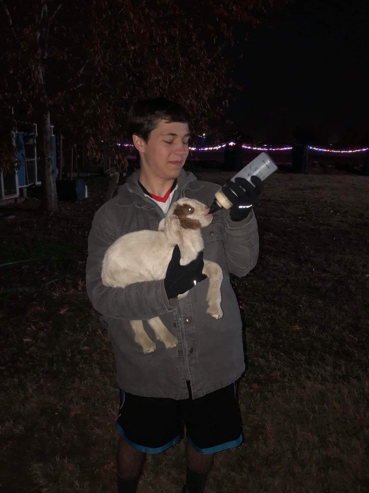

I am the youngest in my family of seven total. With my family I have traveled most of the world. I have been to four continents, two dozen countries, and have a goal to visit every continent including Antartica. I even lived in Mainland China for a time as well with my family.
I have a great love for the outdoors and enjoyed living two years in Alaska! Hiking is a hobby of mine, and I find I deal with stress by going on nature walks. I love fishing and hunting. I find being outside to be comforting even if I am doing nothing.
I grew up raising animals in my yard. I have raised doves,goats, cows, a horse, chickens, ducks, turkeys, and the occasional dog. We never got a cat because my mom is allergic. My parents got these animals for me so I would have more chores. They felt it would build my character if I kept care of them instead of having free time.